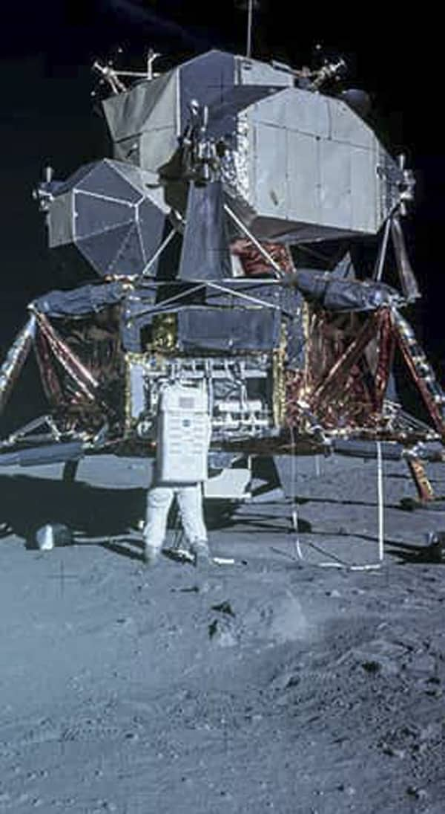

To Mars
we musk
Don't tell me the sky is the limit, when there's footprints on the moon.
Paul Brand
From luna to mars
Using the moon as a pitstop
In the last few years, there have been discussions of building a lunar base to use as a refuelling station for the Mars missions.
Water ice found on the Moon and Mars could be used to produce rocket fuel, as well as providing water and oxygen for the astronauts.
Colonies on mars
The recent surge in exploration, as well as the discoveries that Mars was once habitable, has led to renewed interest in sending humans to Mars, and not just to explore. There are even plans to send people there to create a permanent presence there, which may or may not involve ecologically engineering the planet to make it more Earth-like; that is, terraforming it.